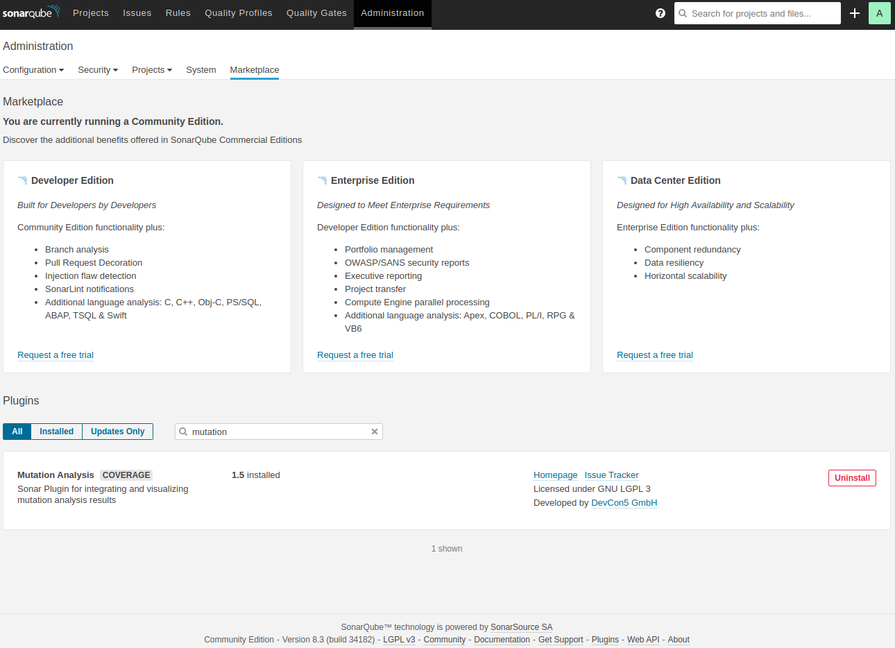
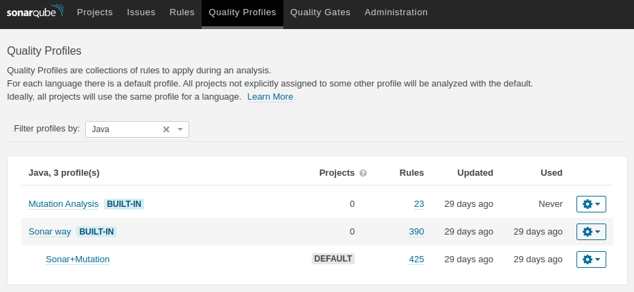
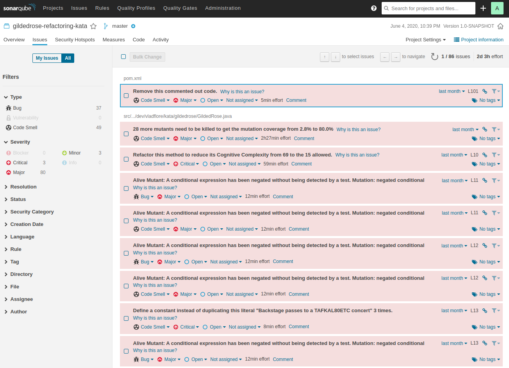

SonarQube on AWS EC2
In this post I will share my experience with installing SonarQube on an AWS EC2 instance. What you’ll see below are some steps and hints I followed when setting up a SonarQube Server on an EC2 machine.
The motivation behind
I wanted a SonarQube Server running in the cloud so that my GitHub projects could benefit of it. It is always a good idea to have some quality checks performed on your code and some way to drill down through them and get an idea on how good or bad your code is. I also didn’t want to set up my own cloud, so I just sticked with AWS EC2 solution, despite the fact that it is not always for free.
Make sure to check the documentation and the billing policies to not have any surprises at the end of the month. In case you do not need the instances to run all the time you can stop them and only start them when you need them. A stopped instance is billed differently and less than a running one.
As I said, I want to use Sonar for my GitHub projects, which means I want it configured specifically to my needs, which are:
- the quality checks (history) should be persisted, a.k.a, an in-memory database will not suffice. I will use PostgreSQL 12.
- I want mutation testing (MT) enabled and I want to use the MT rules together with the default rules to check the code. As for the language I will initially start with Java.
Having said this, let’s start with the installation.
Step 1
Get an AWS EC2 instance up and running.
There is not much to say here, go to the AWS Console, check the documentation and follow the steps, it’s pretty intuitive and no brainer at all. After having done that - the instance is running and you can SSH into it, proceed with the next step.
Step 2
Prepare the EC2 instance for SonarQube installation.
You won’t have pretty much anything pre-installed so you’ll have to do it yourself.
NOTE: most of the commands require sudo access, so…you have been warned!
Update the system
sudo apt update
sudo apt upgradeInstall unzip tool
sudo apt install unzipInstall Java 11
SonarQube 8.3 requires Java - Oracle JRE 11 or OpenJDK 11 - installed on the machine, I’ll go with OpenJDK.
sudo apt install openjdk-11-jdkInstall PostgreSQL 12
Bbefore running the command add the PostgreSQL apt repository as documented here.
sudo apt install postgresql-12Prepare PostgreSQL for SonarQube
This basically means creating the user and the database.
# change current user to postgres
# (this was created for you as part of the PostgreSQL installation)
sudo su - postgres
# go into PostgreSQL
psql--- create the user
CREATE USER sonarqube WITH PASSWORD 'yourPassword';
--- create the database
CREATE DATABASE sonarqube OWNER sonarqube;
--- grant the privileges
GRANT ALL PRIVILEGES ON DATABASE sonarqube TO sonarqube;
--- exit PostgreSQL
\qAdd inbound rule for the security group the instance belongs to
In order to allow requests to be made to SonarQube you have to add an inbound rule for the security group the EC2 instance belongs to. Find the security group your instance has (on the Instances page, check for the Security Groups column in the table which displays your instances, go to that SG and edit the Inbound Rules by adding a new one for TCP and port 9000).
Step 3
Download the SonarQube Server.
wget https://binaries.sonarsource.com/Distribution/sonarqube/sonarqube-8.3.0.34182.zip
unzip sonarqube-8.3.0.34182.zip
# move the unzipped folder under /opt
sudo mv sonarqube-8.3.0.34182 /opt/sonarqubeStep 4
Create user for SonarQube.
sudo adduser --system --no-create-home --group --disabled-login sonarqube
sudo chown -R sonarqube:sonarqube /opt/sonarqubeStep 5
Configure SonarQube properties and launch scripts.
Edit sonar.properties and add the following properties:
vi /opt/sonarqube/conf/sonar.propertiessonar.jdbc.username=sonarqube
sonar.jdbc.password=yourPassword
sonar.jdbc.url=jdbc:postgresql://localhost/sonarqube
sonar.web.javaAdditionalOpts=-server
sonar.web.host=0.0.0.0
Edit sysctl.conf and set the property vm.max_map_count to 262144. SonarQube will most likely not start without it!
vi /etc/sysctl.confvm.max_map_count=262144
Edit sonar.sh and set the variable RUN_AS_USER to sonarqube.
vi /opt/sonarqube/bin/linux-x86-64/sonar.shRUN_AS_USER=sonarqube
At this point you should have everything in place to be able to start the SonarQube and access it in the browser.
Start SonarQube
# navigate to the Sonar installation location
cd /opt/sonarqube/bin/linux-x86-64
# start Sonar
./sonar.sh startCall http://<IPv4 Public IP>:9000/ in the browser, where IPv4 Public IP stands for the public IP, which you can take from the Description information of your EC2 instance.
You should see your SonarQube page.
Now let’s configure Sonar.
Configure SonarQube
First step is to enable the mutation testing support, which means that you have to install a plugin.
For this, login with the default credentials admin/admin, go to Administration -> Marketplace and search for Mutation Analysis plugin and install it.
Restart the server.

Next, we need to create a new quality profile, which will contain the default SonarQube Java rules and the Mutation Analysis rules and set it as the default profile for Java.
Follow the steps listed in this article under the section Enable the Mutation Analysis Rules to achieve the above mentioned.
When finished it should look something similar to this:

Now SonarQube should be able to interpret the mutation testing results too.
Before drilling down through your project and hunting down your mutations you have to upload the mutation analysis for the project in question.
I am using Maven as a build automation tool for my project and my pom.xml is updated accordingly.
At a minimum, you need the pitest-junit5-plugin dependency, the sonar-maven-plugin plugin and the pitest-maven plugin. For Java code coverage do not forget about jacoco-maven-plugin.
Check the GitHub repo to see how the pom.xml looks like.
After your project is all set up, the following command should suffice to perform a code analysis of your code. Note that the value for sonar.host.url should be changed
accordingly to contain the IP of your EC2 instance hosting the SonarQube Server.
mvn clean verify org.pitest:pitest-maven:mutationCoverage sonar:sonar -Dsonar.host.url=http://<IPv4 Public IP>:9000And voilà the analysis of my project at that point in time (including the mutation analysis):

Now go write those unit tests, kill those mutants and reach a 90%+ code coverage. I dare you! ;)
Happy code crafting!